Case study product/pangea-card · Pangea Money Transfer
Pangea: launching a debit card
On a mission to give everyone the power to move their money effortlessly — starting with those who need it most. I helped Pangea improve their cross-platform application and bring a brand-new product to market.
Pangea Money Transfer is a data-driven fintech startup specializing in money remittances — international money transfers made as easy and intuitive as possible. With a majority of users of Mexican descent, 66% of the user base is non-native speaking, unbanked or underbanked, and often undocumented. We were driven by the purpose of empowering an underserved class to manage their money and care for their loved ones.
Illustrations by Nico Rubio
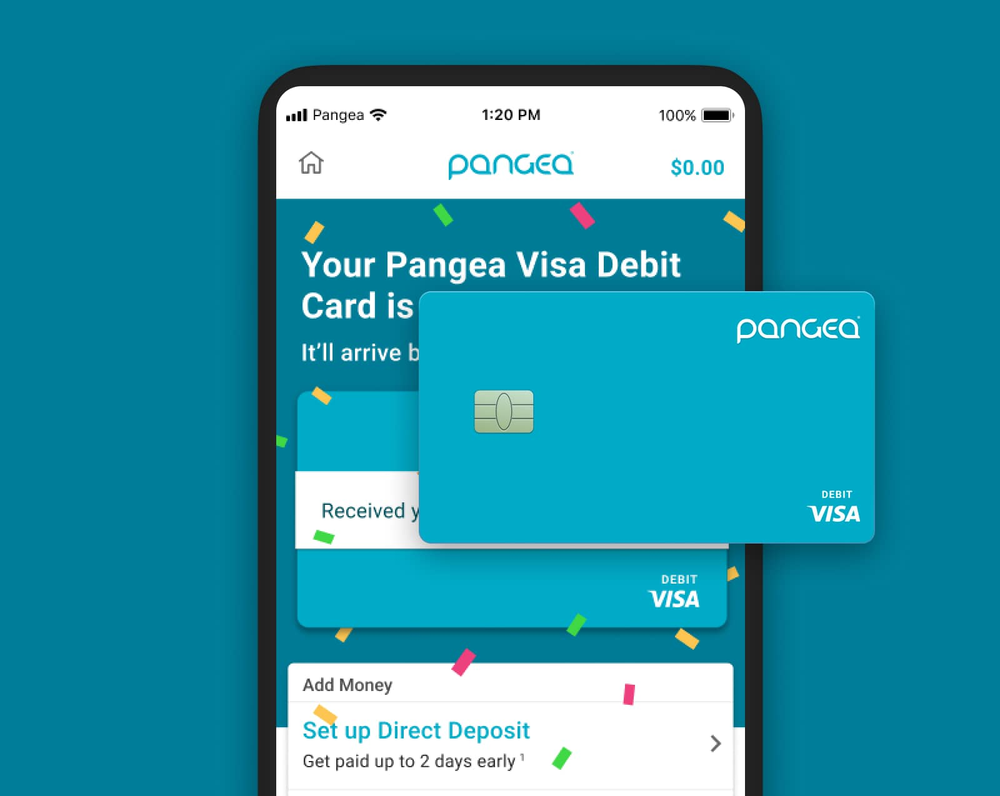
Impact
Outcomes
- 250kunique user sign-ups
- 0 → 1a brand-new banking product brought to market
The problem
Finding a differentiator
To continue Pangea's success we looked for a differentiator within our space, coupled with the needs of our unique user base. Looking to be the first remittance application to offer banking services to this niche market, Pangea set out to release a debit card specifically targeted at our remittance customers.
Over the following months we iteratively released The Pangea Visa® Debit Card, working with our banking partner Green Dot. I was the only designer on the product team, alongside two PMs and three developers, slowly releasing features and measuring their impact.
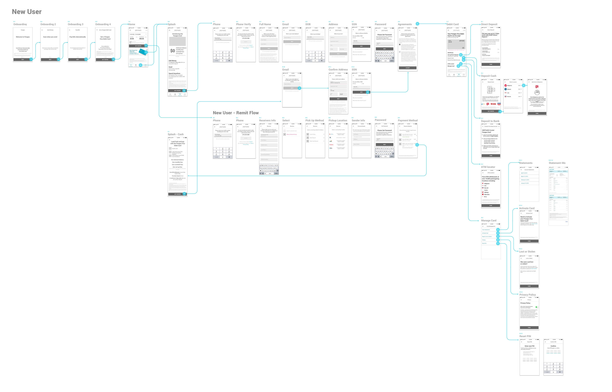
Defining success
From the beginning we noted rough success metrics, adjusting them as the product evolved, but always setting goals against KPIs:
-
kpi/01
Activation
How well are we bringing in new users?
-
kpi/02
Retention
How well do we keep our existing users?
-
kpi/03
Payback
Months to break even.
Data-driven mindset
Awareness of customer impact
Even before the addition of a new card, our application features were quickly increasing in complexity. Given the number of changes we were proposing, it was important to have an awareness of customer impact. I regularly integrated customer feedback into final design decisions through user research and customer surveys.
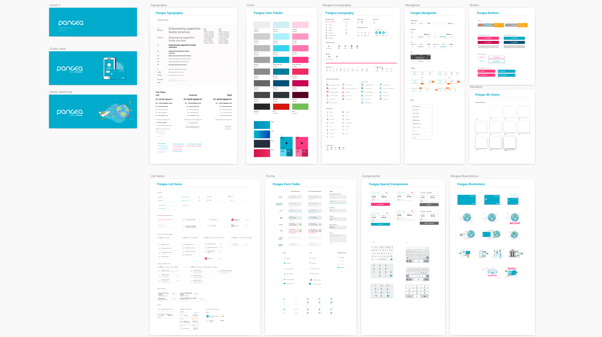
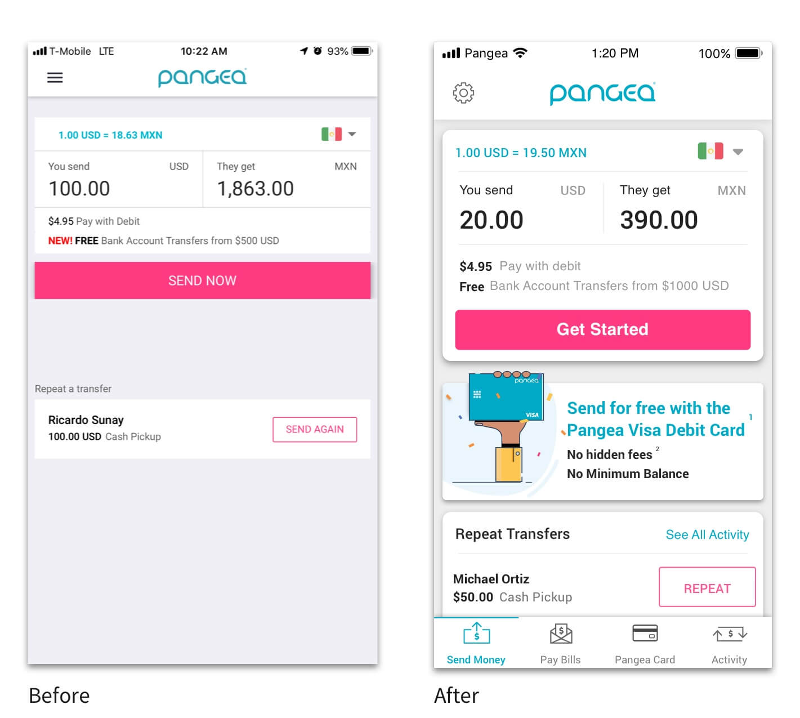
Testing the sign-up flow
Trust, identity, and the SSN barrier
It was important to start learning about our customers' feelings and behaviors around banking — specifically the sharing of personal information. Our users are known, for multiple reasons, not to trust banks. Understandably so; we needed to uncover how to make it easier.
The SSN requirement for an account is a huge barrier for our customers, with an estimated 25% representing undocumented workers. We looked to introduce support for other forms of government-issued IDs specific to Mexico, such as the Matrícula Consular.
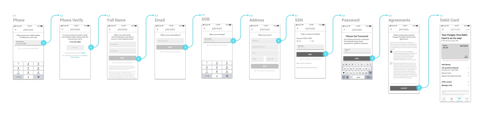
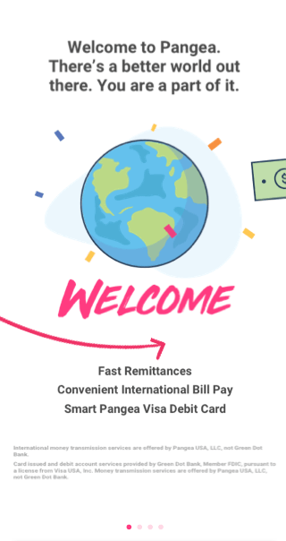
First launch
Learning through waitlists
To quickly start learning from the real product and live customers, we ran a waitlist as the first exposure test: a controlled group of users began seeing promotion banners for the upcoming Pangea Card, giving us a read on demand within the existing base. Only 15% of our English-language users saw the promo. Beyond the usual metrics, we wanted to see how the new promotion and splash pages impacted overall use of the app.
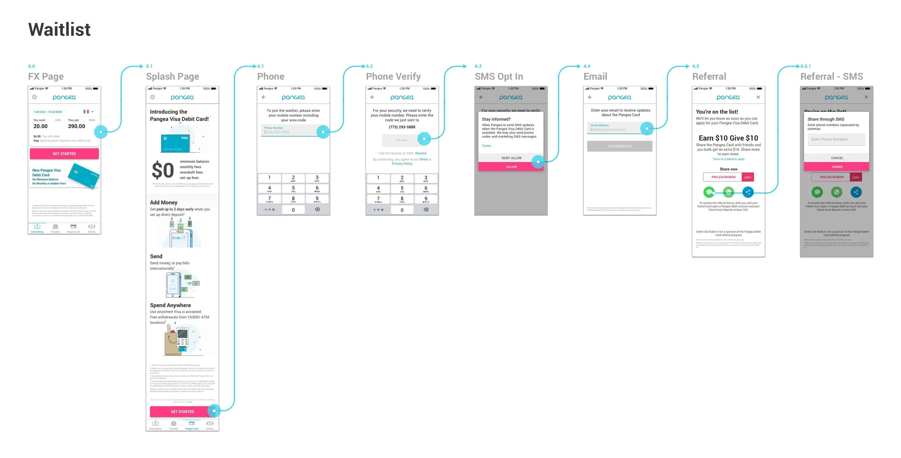
Waitlist: goals vs. results
- 44%saw the promotion and clicked — goal: 30%
- 46%reached the splash page and tapped “Join” — goal: 50%
- 18%shared the card info — goal: 25%
With the success of the first waitlist, the business felt comfortable investing in another release.
External waitlist
A revised version of the waitlist, coordinated with an external marketing campaign.
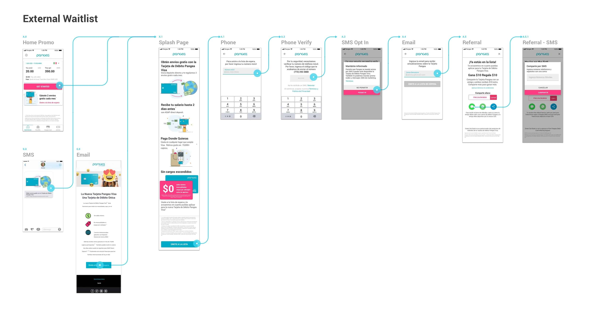
After adjusting our main promotional banner and splash page, we increased conversion from the home page into sign-up. Comfortable with our discovery and sign-up path, we were ready to push out full functionality.
- 48%saw the promotion and clicked — up from 44%
- 64%reached the splash page and tapped “Join” — up from 46%
- 24%shared the card info — up from 18%
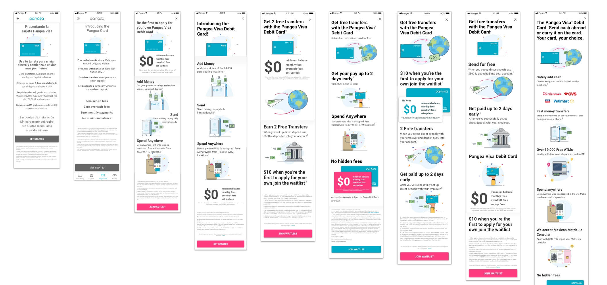
We learned a lot about how to position product features and which benefits to highlight, running A/B tests on anything uncertain and continually measuring performance of promotions and splash pages.
In interviews, people emphasized $0 down, no minimum balance, no overdraft fees. In the data, those benefits weren't unique enough to move our users.
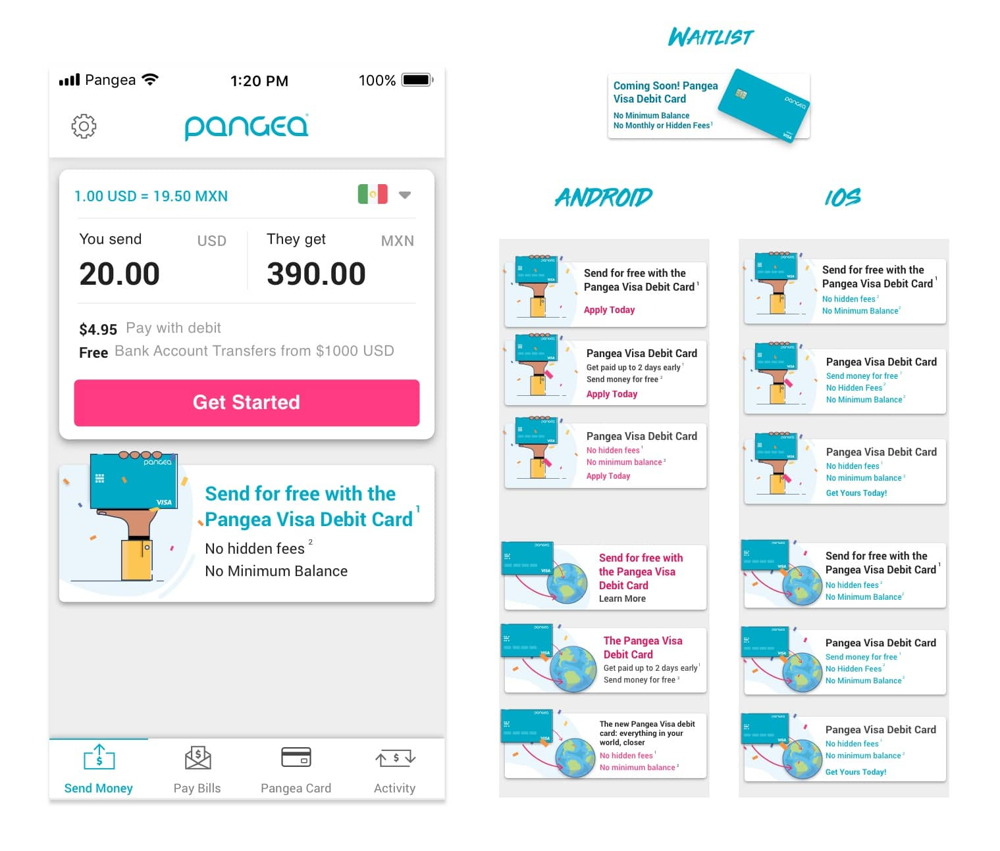
Market ready
Half the user base, full functionality
50% of our users would be exposed to the full functionality of the application — while I already had improvements designed and spec'd for ACH and Matrícula support.
Targets for the release
- Activation: 25% tap the promo · 70% tap “Get Started” · 10% finish the application.
- Retention: 60% approval rate · 8% funded-account rate · 3% sign up and fund their account.
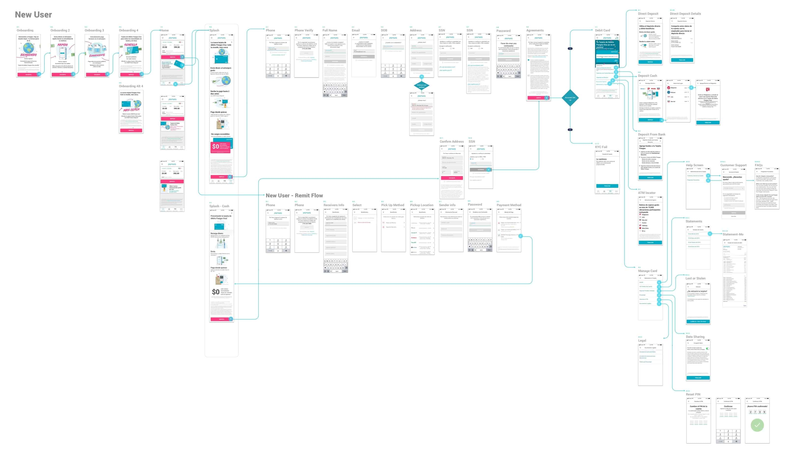
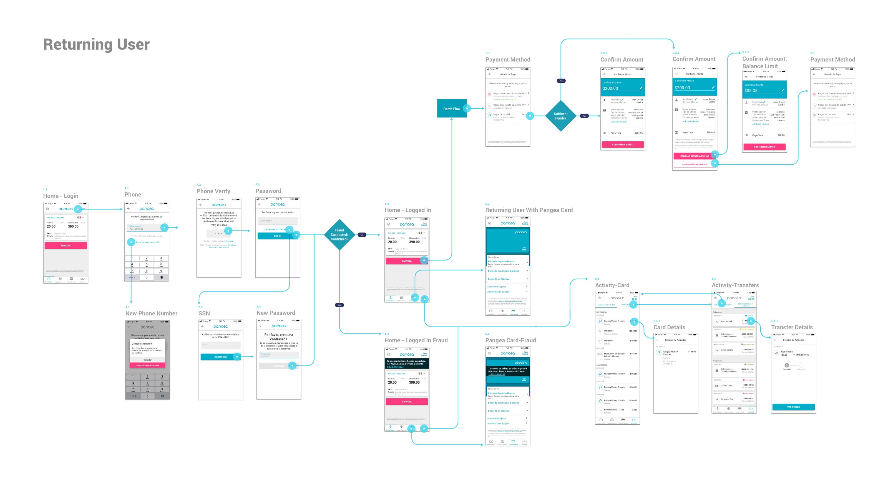
Still iterating
Following the funnel
The latest data showed where the product needed the biggest improvements. Ultimate success meant getting people to fund their accounts — we needed to move users through the Pangea Card funnel more effectively by consistently and strategically reminding them of their next step.
Activation results
- 23%tapped the promo — goal: 25%
- 60%tapped “Get Started” — goal: 70%
- 5.7%finished the application — goal: 10%
Retention results
- 76%approval rate — goal: 60%
- 3.7%funded-account rate — goal: 8%
- −5.8%lift in remittance activation among promo-exposed users
That last number mattered: remittances dipped among users who could see the promo. Our early hypothesis was that the card promo pushed repeat transfers below the fold, decreasing their use. In response we redesigned the promo banners and built a system of app notifications that strategically nudged users down the funding flow.
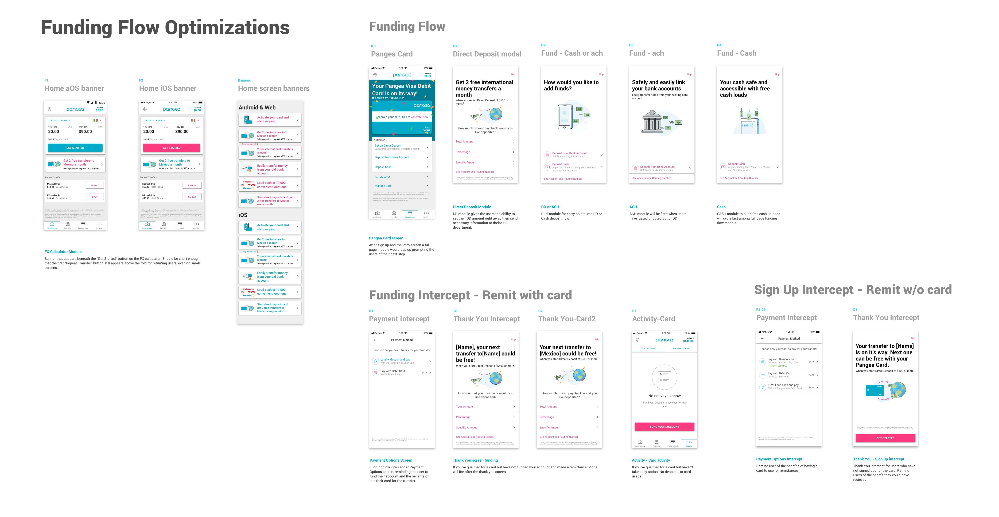
Gamifying the funding flow
I proposed a flow that would encourage users to follow through on funding their cards — a visible apply → activate → deposit → earn progression, tested as both a timeline and interactive tabs.
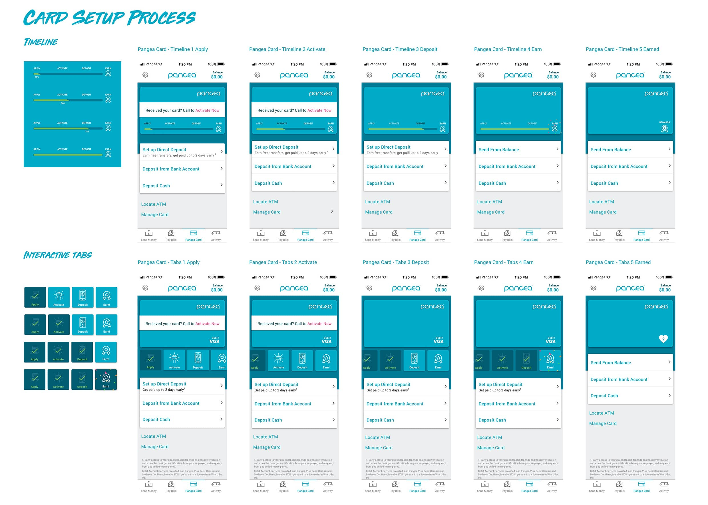
Epilogue
An honest ending
We planned to keep pushing the product and learning from our users — but due to COVID, front-end development was paused and a handful of the team was let go, including me. I hope the team keeps the product progressing and helping its users. If you ever need to send money internationally, check out Pangea Money Transfer.